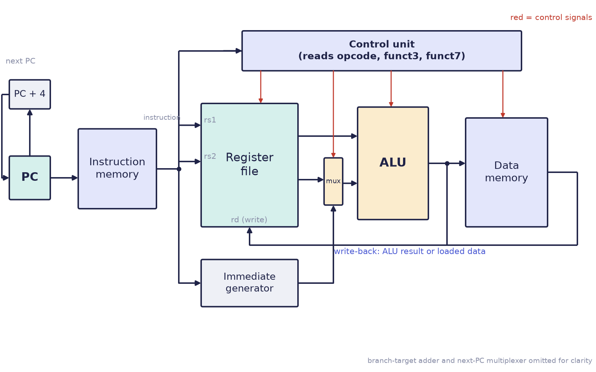
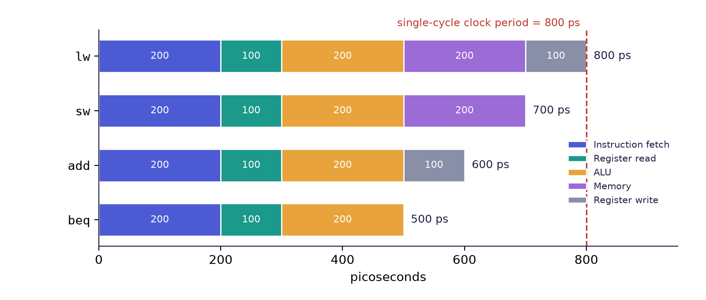
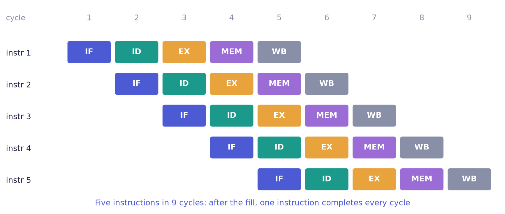
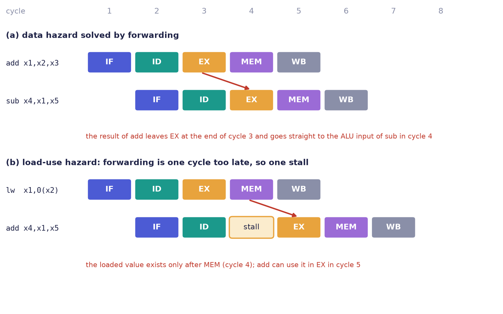

Chapter 10: From Instructions to Hardware: Datapath and Pipeline¶
We now have a language for describing hardware (Chapters 3 to 7) and an instruction set to implement (Chapters 8 and 9). This chapter joins them. It shows how one RISC-V instruction is carried out by a single-cycle datapath, why that design runs at the speed of its slowest instruction, and how a five-stage pipeline overlaps instructions to keep every part of the hardware busy, at the price of hazards that forwarding and prediction have to tame. In the middle of the chapter we write a small RISC-V processor in Verilog, the capstone of the book.
10.1 The single-cycle datapath¶
In the single-cycle datapath each instruction runs from start to finish in one clock cycle. Its blocks are the datapath and control units of Chapter 2, now with names.
| Part | Job |
|---|---|
| Program counter (PC) | holds the address of the current instruction; moves on by 4, or is redirected by a branch or jump |
| Instruction memory | returns the 32-bit instruction at that address |
| Register file | 32 registers; reads two (rs1, rs2) and writes one (rd) per cycle |
| Immediate generator | rebuilds and sign-extends the constant hidden in the instruction |
| ALU | adds, subtracts, compares, shifts, and works out memory addresses |
| Data memory | read by loads, written by stores; its address comes from the ALU |
| Control unit | reads the opcode and function fields and sets every multiplexer and enable |
Figure 10.1 shows the blocks and the main wires.

An instruction takes its own route through these blocks, and the control unit is what opens and closes the routes.
addflows PC → instruction memory → register file (readrs1andrs2) → ALU (add) → back into the register file (writerd).lwsends the ALU's address to data memory and writes the loaded value intord.swdoes the same address calculation, but writes the contents ofrs2into data memory and writes no register.bequses the ALU to compare its two registers and, if they are equal, feeds the branch target back into the PC.jalwrites PC + 4 intordand loads the PC with the jump target.
The control signals that select these routes, for the instructions of the machine built below, are:
| Instruction | reg_write |
alu_src (1 = immediate) |
mem_write |
mem_to_reg |
branch |
jump |
ALU does |
|---|---|---|---|---|---|---|---|
add, sub |
1 | 0 | 0 | 0 | 0 | 0 | add, or subtract (from funct7) |
addi |
1 | 1 | 0 | 0 | 0 | 0 | add |
lw |
1 | 1 | 0 | 1 | 0 | 0 | add (address) |
sw |
0 | 1 | 1 | – | 0 | 0 | add (address) |
beq |
0 | 0 | 0 | – | 1 | 0 | subtract (test zero) |
jal |
1 | – | 0 | – | 0 | 1 | none (writes PC + 4) |
10.2 Why one instruction per cycle is slow¶
"One cycle per instruction" sounds fastest. It is not. In a single-cycle design the clock period has to be long enough for the slowest instruction, which is a load, since it walks the entire path. Every faster instruction waits for the worst case. Suppose the stages take these times (typical textbook figures, in picoseconds):
| Instruction | Fetch | Register read | ALU | Memory | Register write | Total |
|---|---|---|---|---|---|---|
lw |
200 | 100 | 200 | 200 | 100 | 800 |
sw |
200 | 100 | 200 | 200 | – | 700 |
add |
200 | 100 | 200 | – | 100 | 600 |
beq |
200 | 100 | 200 | – | – | 500 |
The clock period must fit the slowest, 800 ps (Figure 10.2). Every add therefore waits 200 ps that it does not need, and every beq wastes 300 ps. (One picosecond is a trillionth of a second.)

10.3 A small RISC-V processor in Verilog¶
We now describe the datapath of Figure 10.1 for seven instructions: add, sub, addi, lw, sw, beq and jal. Each block is a module. The first is the register file, with the rule that x0 is always zero: writes to it are ignored, and reads of it return 0.
module regfile (
input wire clk,
input wire we,
input wire [4:0] rs1, rs2, rd,
input wire [31:0] wd,
output wire [31:0] rd1, rd2
);
reg [31:0] x [0:31];
integer i;
initial for (i = 0; i < 32; i = i + 1) x[i] = 32'd0;
always @(posedge clk)
if (we && rd != 5'd0) x[rd] <= wd; // x0 is never written
assign rd1 = (rs1 == 5'd0) ? 32'd0 : x[rs1]; // x0 always reads 0
assign rd2 = (rs2 == 5'd0) ? 32'd0 : x[rs2];
endmodule
Two read ports are combinational (the two assign statements) and one write port is clocked. The immediate generator rebuilds the constant for each format, using exactly the bit positions of Figure 8.1 and Figure 8.2, with the sign taken from bit 31:
module immgen (
input wire [31:0] instr,
output reg [31:0] imm
);
always @(*) begin
case (instr[6:0])
7'b0010011, 7'b0000011: // I-type: addi, lw
imm = {{20{instr[31]}}, instr[31:20]};
7'b0100011: // S-type: sw
imm = {{20{instr[31]}}, instr[31:25], instr[11:7]};
7'b1100011: // B-type: beq
imm = {{19{instr[31]}}, instr[31], instr[7], instr[30:25], instr[11:8], 1'b0};
7'b1101111: // J-type: jal
imm = {{11{instr[31]}}, instr[31], instr[19:12], instr[20], instr[30:21], 1'b0};
default: imm = 32'd0;
endcase
end
endmodule
The widths of the concatenations add up to 32 in each case: for example, the B-type immediate is \(19 + 1 + 1 + 6 + 4 + 1 = 32\) bits. The ALU needs only to add or subtract, and to flag a zero result for beq:
module alu32 (
input wire [31:0] a, b,
input wire sub,
output wire [31:0] y,
output wire zero
);
assign y = sub ? (a - b) : (a + b);
assign zero = (y == 32'd0);
endmodule
The top level wires the blocks together and contains the control unit as one combinational case on the opcode, exactly the table above:
module mini_rv (
input wire clk,
input wire rst_n,
output wire [31:0] pc_out
);
reg [31:0] pc;
reg [31:0] imem [0:63]; // instruction memory (loaded by the testbench)
reg [31:0] dmem [0:63]; // data memory
wire [31:0] instr = imem[pc[7:2]]; // word-aligned fetch
wire [6:0] opcode = instr[6:0];
wire [4:0] rs1 = instr[19:15], rs2 = instr[24:20], rd = instr[11:7];
wire [31:0] imm, rd1, rd2, alu_y, alu_b, wb;
wire zero;
// control unit: hardwired, one case per opcode
reg reg_write, alu_src, mem_write, mem_to_reg, branch, jump, sub;
always @(*) begin
reg_write = 1'b0; alu_src = 1'b0; mem_write = 1'b0; mem_to_reg = 1'b0;
branch = 1'b0; jump = 1'b0; sub = 1'b0;
case (opcode)
7'b0110011: begin reg_write = 1'b1; sub = instr[30]; end // add, sub
7'b0010011: begin reg_write = 1'b1; alu_src = 1'b1; end // addi
7'b0000011: begin reg_write = 1'b1; alu_src = 1'b1; mem_to_reg = 1'b1; end // lw
7'b0100011: begin alu_src = 1'b1; mem_write = 1'b1; end // sw
7'b1100011: begin branch = 1'b1; sub = 1'b1; end // beq
7'b1101111: begin reg_write = 1'b1; jump = 1'b1; end // jal
default: ;
endcase
end
immgen u_imm (.instr(instr), .imm(imm));
regfile u_rf (.clk(clk), .we(reg_write), .rs1(rs1), .rs2(rs2), .rd(rd),
.wd(wb), .rd1(rd1), .rd2(rd2));
assign alu_b = alu_src ? imm : rd2;
alu32 u_alu (.a(rd1), .b(alu_b), .sub(sub), .y(alu_y), .zero(zero));
wire [31:0] load_data = dmem[alu_y[7:2]];
assign wb = jump ? (pc + 32'd4) : (mem_to_reg ? load_data : alu_y);
wire take = (branch & zero) | jump;
wire [31:0] pc_next = take ? (pc + imm) : (pc + 32'd4);
always @(posedge clk or negedge rst_n)
if (!rst_n) pc <= 32'd0;
else pc <= pc_next;
always @(posedge clk)
if (mem_write) dmem[alu_y[7:2]] <= rd2;
assign pc_out = pc;
endmodule
Trace one instruction through the code to see how it works. For addi t0, zero, 1 (0x00100293): the opcode is 0010011, so the control sets reg_write and alu_src; the immediate generator produces 1; the register file supplies x0 = 0; the ALU adds \(0 + 1\); wb is alu_y, the register file writes it into x5 at the clock edge, and the PC moves to PC + 4. For beq t0, t1, done, branch and sub are set, the ALU subtracts, and if the result is zero take is 1 and the PC becomes pc + imm, where imm is the branch offset.
To test it, we load the sum 1..10 program (the form with the test at the top, Section 9.4) as a list of hexadecimal words, one per line, in a file sum.hex:
00000513
00100293
00b00313
00628863
00550533
00128293
ff5ff06f
00000013
These are addi a0,zero,0; addi t0,zero,1; addi t1,zero,11; beq t0,t1,done (offset +16); add a0,a0,t0; addi t0,t0,1; jal zero,loop (offset −12); and the closing nop. The testbench runs until the PC passes the last instruction and checks the registers:
`timescale 1ns/1ps
module mini_rv_tb;
reg clk = 1'b0, rst_n = 1'b0;
wire [31:0] pc;
integer cycles = 0;
mini_rv dut (.clk(clk), .rst_n(rst_n), .pc_out(pc));
always #5 clk = ~clk;
always @(posedge clk) if (rst_n) cycles <= cycles + 1;
initial begin
$readmemh("sum.hex", dut.imem);
#12 rst_n = 1'b1;
wait (pc == 32'd32); // 8 instructions of 4 bytes
#1;
if (dut.u_rf.x[10] == 32'd55 && dut.u_rf.x[5] == 32'd11)
$display("PASS: a0=%0d t0=%0d after %0d cycles",
dut.u_rf.x[10], dut.u_rf.x[5], cycles);
else
$display("FAIL: a0=%0d t0=%0d", dut.u_rf.x[10], dut.u_rf.x[5]);
$finish;
end
endmodule
On the correct design the test prints a0=55 t0=11 after 45 cycles: one instruction per cycle, and the program of Section 9.4 with the test at the top executes 45 instructions. If your count differs, trace the program by hand.
10.4 The five-stage pipeline¶
A pipeline splits the datapath into stages, with a register between each, so that a different instruction can be in every stage at the same time. Compare laundry. Washing, drying and folding one load at a time leaves the washer idle while you fold; start the second load washing as soon as the first has gone into the dryer, and all three machines work at once. The textbook RISC pipeline has five stages.
| Stage | Name | What happens |
|---|---|---|
| 1 · IF | instruction fetch | read the instruction at the PC; compute PC + 4 |
| 2 · ID | instruction decode | decode the fields, read rs1 and rs2, build the immediate |
| 3 · EX | execute | the ALU computes: arithmetic, a memory address, or a branch comparison |
| 4 · MEM | memory access | loads read data memory, stores write it (other instructions idle here) |
| 5 · WB | write back | the result is written to rd |
Figure 10.3 draws five instructions as a space-time diagram.

Each instruction still takes five cycles from start to finish. But once the pipe is full, one finishes in every cycle. With the stage times of Section 10.2 (at most 200 ps each) the clock period can fall from 800 ps to 200 ps.
Example 10.1: how much faster?
Run \(N\) instructions on the single-cycle design (800 ps per instruction) and on an ideal five-stage pipeline (200 ps clock, no stalls).
- Single-cycle time: \(T_1 = 800\,N\) ps.
- Pipelined time: the first instruction needs 5 cycles to complete; each later one completes one cycle after the previous, so \(N\) instructions need \(N + 4\) cycles: \(T_5 = 200\,(N+4)\) ps.
- For \(N = 1000\): \(T_1 = 800\,000\) ps and \(T_5 = 200 \times 1004 = 200\,800\) ps.
- Speedup \(= 800\,000 / 200\,800 \approx 3.98\).
As \(N\) grows the speedup tends to \(800/200 = 4\), the ratio of the clock periods, and not to 5, the number of stages. The five stage times (200, 100, 200, 200 and 100 ps) are unequal, and the pipeline's clock must fit the slowest of them, so the stages cannot all be used to the full. The gain is real, but it is an ideal figure: each stall and each wrongly fetched instruction reduces it.
10.5 When overlapping goes wrong: hazards¶
A hazard is any situation in which the next instruction cannot safely go ahead in its cycle. There are two kinds that matter here.
Data hazards¶
add x1, x2, x3 # writes x1 in WB (cycle 5)
sub x4, x1, x5 # wants x1 in ID (cycle 3)
The second instruction needs a result that has not been written back yet. The fix is forwarding: send the ALU's result straight to the next instruction's ALU input, without waiting for write-back (Figure 10.4a). The result of the add exists at the end of its EX stage, in cycle 3, in time for the sub to use in its own EX stage in cycle 4.
After a lw, even forwarding is one cycle too late: the loaded value exists only after the MEM stage, while an immediately following instruction wants it at the start of its EX stage. The pipeline must therefore stall for one cycle (Figure 10.4b).

Control hazards¶
beq t0, t1, far # decided in EX
add ... # already being fetched!
A branch is decided in EX, but by then the following instructions have already been fetched. Either the machine guesses (branch prediction) and throws away the wrong instructions if it guessed wrongly, or it waits. The details are the subject of the sibling book on microarchitecture.
Why RISC-V pipelines so cleanly
Fixed 32-bit instructions mean that fetch always takes the same-sized step. Register fields that never move let decode read registers at once. The load-store rule means that only the MEM stage ever touches data memory. And the few, simple formats make every stage do a short and even amount of work. The simplicity of Chapter 8 is exactly what makes a clean five-stage pipeline possible.
10.6 RISC-V in the world¶
RISC-V is found in tiny microcontrollers and sensors, where every cent of licence fee matters; inside other chips, as management cores of SSDs, GPUs and machine-learning accelerators; in custom silicon, where companies add their own instructions for one special job; in research and in national programmes that wish to build processors without depending on a foreign licensor; and in 64-bit cores that run Linux. It is also small enough to learn completely and real enough to matter. The same encodings you have decoded by hand run on shipping chips.
10.7 Summary¶
- A single-cycle datapath (PC, instruction memory, register file, immediate generator, ALU, data memory, control) executes each instruction in one cycle; the control unit selects the route by setting multiplexers and write enables.
- Its clock period must fit the slowest instruction, the load (800 ps in the example), so faster instructions waste time.
- Each block of the datapath is a short Verilog module; the control unit is one combinational
caseon the opcode; the register file keepsx0at zero. - A five-stage pipeline (IF, ID, EX, MEM, WB) overlaps instructions: after the fill, one instruction completes per cycle, and \(N\) instructions take \(N + 4\) cycles when nothing stalls.
- Data hazards are solved by forwarding, except after a load, where one stall is needed; control hazards are handled by prediction or waiting.
- RISC-V's fixed-length instructions, fixed register fields and load-store rule make the pipeline clean.
10.8 Exercises¶
Exercise 10.1 (capstone: a single-cycle mini RISC-V). Build the single-cycle datapath of this chapter in Verilog, supporting add, sub, addi, lw, sw, beq and jal, with modules for the PC, instruction memory (load a hex file with $readmemh), register file (x0 = 0), immediate generator, ALU (the ALU of Chapter 5 widened to 32 bits) and data memory, and a control unit. Assemble the sum 1..10 program to hex, load it and run it. The testbench stops when the PC passes the last instruction and checks the registers. What should the registers and the cycle count be? Bonus: add bne, slt and andi and run the programs of Exercise 9.4.
Answer
The modules of Section 10.3 are one solution. After the sum 1..10 program, a0 (x10) holds 55 and t0 (x5) holds 11. The version with the branch at the top takes 45 cycles at one instruction per cycle (the version with the test at the bottom takes 33). Compare your cycle count with the pipelined machine of Section 10.4: the pipeline would take the same 45 instructions plus 4 cycles of fill (49 cycles, ignoring the stalls caused by the taken branches), but each cycle would be four times shorter. For the bonus, bne needs only the funct3 bit that selects "not equal" in the branch test; slt and andi need the ALU to gain a compare and an AND, which the control selects from funct3.
Exercise 10.2. Using the stage times of Section 10.2, what is the minimum clock period of a single-cycle machine that executes only add, sw and beq? And of one that executes lw as well? By what factor is the second slower?
Answer
Without lw the slowest instruction is sw at 700 ps, so the period is 700 ps. With lw the period must be 800 ps. The second machine is slower by \(800/700 \approx 1.14\), about 14%, on every instruction, including those that never touch memory.
Exercise 10.3. A program of 100 instructions runs on the ideal five-stage pipeline of Section 10.4. How many cycles does it take with no stalls? How many with 10 load-use stalls? How long does it take in nanoseconds at 200 ps per cycle?
Answer
With no stalls it takes \(100 + 4 = 104\) cycles. Each load-use stall adds one cycle, so 10 stalls give \(114\) cycles. At 200 ps (0.2 ns) per cycle, the second case takes \(114 \times 0.2 = 22.8\) ns.
Exercise 10.4. Identify the data hazards in this sequence and say which need a stall with forwarding.
lw t0, 0(a0)
add t1, t0, t2
add t3, t1, t0
sub t4, t3, t1
Answer
Instruction 2 reads t0 right after the load that writes it: a load-use hazard, which needs one stall even with forwarding. Instruction 3 reads t1 from instruction 2 (the previous instruction, forwarded from EX) and t0 from instruction 1 (two instructions earlier, available from the MEM/WB stage by the time it is needed): no stall. Instruction 4 reads t3 from instruction 3 (forwarded from EX) and t1 from instruction 2 (two earlier): no stall. In total there is one stall, so the four instructions take \(4 + 4 + 1 = 9\) cycles.
Exercise 10.5. For the single-cycle machine, which control signals are 1 for lw, and which route does the loaded value take to the register file? Why is reg_write 0 for sw?
Answer
For lw, reg_write, alu_src and mem_to_reg are 1: the ALU adds the base register and the immediate to form the address, alu_src selects the immediate as the second ALU input, the address goes to data memory, and mem_to_reg selects the loaded data (rather than the ALU result) as the write-back value for rd. sw writes memory and no register, so reg_write is 0 and mem_write is 1; it also needs alu_src = 1 for the address, and the value stored is rs2.
Exercise 10.6. Explain in two sentences why a pipeline does not make any single instruction finish sooner, yet makes a program finish sooner.
Answer
Each instruction still passes through all five stages, so its own latency is five cycles (and, with the shorter clock, no shorter than before). But the stages work on different instructions at the same time, so after the pipeline fills, one instruction completes in every cycle, which increases throughput, the number of instructions finished per unit time, and so shortens the whole program.